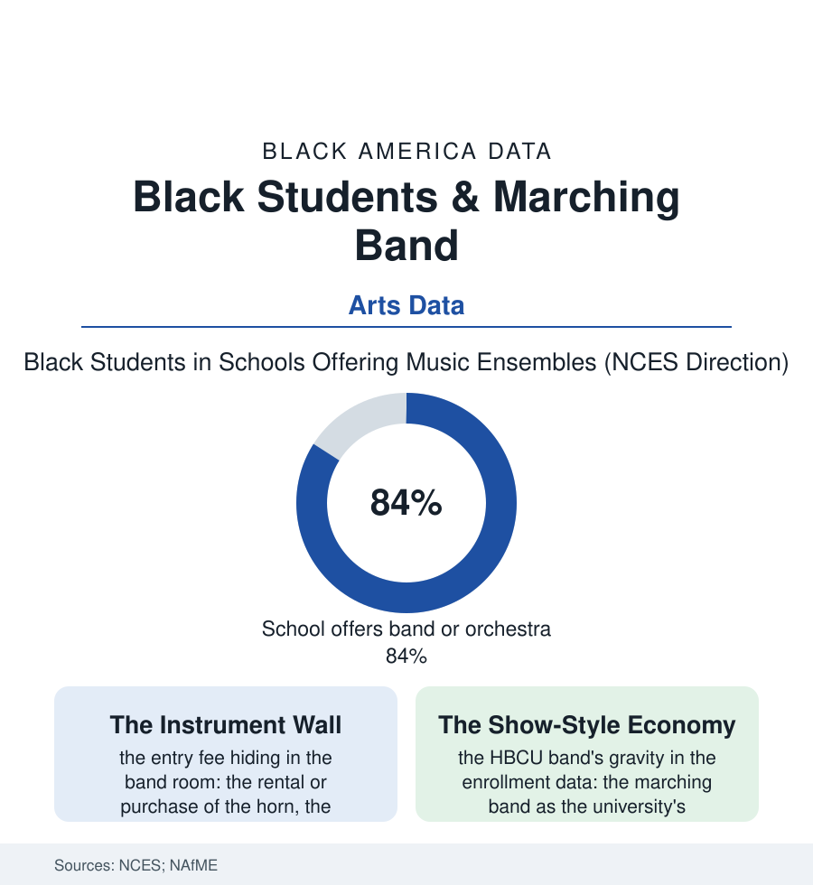

Black Education
The Band Room: Marching Bands and the Loudest Pipeline in School
The marching band is the Black school's public orchestra and the HBCU's beating heart — and its first gate is a thousand-dollar instrument in a fifth-grader's hands. The band file.

On autumn Fridays across this atlas, the most technically demanding public performance in town is given by teenagers: the school marching band, two hundred strong, playing the halftime show that half the stadium actually came for. The band is the Black school's orchestra, ambassador, and scholarship office in one uniform — and its pipeline begins with a price tag. This article reads the band file.
The Gate at the Instrument Closet
The arts-access data give the file its foundation: the NCES surveys of music offering show the ensemble's availability thinning with the school's poverty in the standard gradient — the elementary music specialist rarest where the budget is thinnest, the beginning-band year arriving later or never — and the instrument itself standing as the fee file's most literal gate in this section: the saxophone's purchase price in the thousands, the rental's monthly drip, the school-owned fleet's age and condition in the band director's own surveys (the loaner horns' valve oil and prayer), the private-lesson divide layering the seating chart by income with an honesty the audition data make plain — the first-chair rows of the suburban honor bands reading like the suburb's census, the show-style programs of the Black schools building, in defiance of the arithmetic, the most virtuosic marching culture in American education out of the loaner fleet and the director's will. The band director emerges in the workforce data as one of the Black school's defining figures: part teacher, part impresario, part fundraiser-in-chief (the car washes and candy sales of the booster economy, the instrument-repair line in the budget he defends at the district office), the great directors' tenures spanning generations of a town's families — the band room the school's most durable institution, its alumni returning for homecoming with the loyalty the football file's lettermen rarely match. The discipline data add the file's quiet argument: the band student's attendance, grades, and graduation rows in the longitudinal studies run ahead of the school's means year after year — the ensemble as the engagement machine the reform file keeps trying to invent, already invented, in the room with the trophies.
The drumline deserves its sentence in the file: the percussion section — the school's most competitive seats in the show-style world, its cadences a compositional tradition of their own — functioning, in the participation data, as the band's gateway for the boys the school's other institutions reach last. The counselors know it. The data know it. The drumline's audition sheet, posted in September, is among the most contested documents in the building.
The Halftime Economy and the Loop
The pipeline's summit is the HBCU band, and its economics are the education file's most joyful rows: the great show-style programs — the Human Jukebox, the Marching 101, the Ocean of Soul and their peers — functioning in the enrollment data as their universities' most effective recruiters (the high school bandsman's college list following the halftime videos with a fidelity the admissions office envies), the band scholarships stacking the aid file's most reliable package for the strong player without the test file's cooperation, the drum major's mace carrying, in the culture's own accounting, a prestige the valedictorian's sash acknowledges. The loop closes in the band rooms: the HBCU band's graduates staffing the high school directorships of the South's cities, the style transmitted hand to hand like the faith file's ministry — a self-reproducing institution the arts data can trace from the fifth-grade loaner horn to the college stadium in one unbroken line of teachers. The threats are the budget file's usual weather: the elementary specialist cut first in the squeeze, the instrument fleets aging past repair, the director pipeline thinning — against which the file sets the community's own verdict, rendered annually in the stands: when the band strikes up, the whole town stands. No other line in the school budget buys that. The data — the attendance, the alumni, the enrollments — say the town's instinct is an evidence-based one, and the band file files it accordingly.
Reading the Band Data
The band file is the education section's loudest proof that rigor wears many uniforms: the chant of the stands and the chart in the folder, the discipline audible. The NCES publishes the offerings. The halftime — the visiting side's fans dancing to the home school's band — publishes the verdict, and it is not close.
More in Black Education
Black Educational Attainment: High School Parity, the College Gap
About 89 percent of Black adults hold a high school diploma and one in four holds a bachelor's degree or higher — the attainment ladder, the college completion gap, and the generational trend.
Historically Black Colleges and Universities: Enrollment and Degrees
More than 100 HBCUs enroll roughly 290,000 students and award about one in six Black bachelor's degrees — an outsized share from a small sector. The federal education data.
Black College Enrollment: 2.4 Million Students
About 2.4 million Black students are enrolled in American colleges — nearly two-thirds of them women. The NCES enrollment data by sector, level, and trend.
Source: National Center for Education Statistics arts education surveys; National Association for Music Education data; HBCU band program records; school finance research.